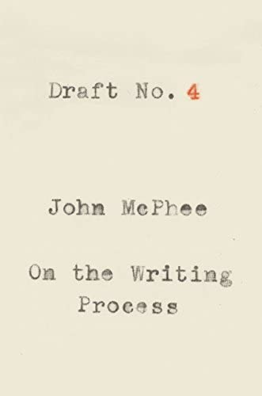

Draft No. 4: On the Writing Process, by McPhee
Saturday October 29, 2022
The New Yorker's John McPhee has collected essays about writing nonfiction. It's largely show-don't-tell advice to write better, in that he writes very well as he tells you about writing. It's a brief and charming grandfatherly memoir from a confident practitioner.

"To some extent, the structure of a composition dictates itself, and to some extent it does not." (page 20)
"O.K. then, what is a lead? For one thing, the lead is the hardest part of a story to write. And it is not impossible to write a very bad one. Here is an egregiously bad one from an article on chronic sleeplessness. It began: “Insomnia is the triumph of mind over mattress.” Why is that bad? It’s not bad at all if you want to be a slapstick comedian—if humor, at that stratum, is your purpose. If you are serious about the subject, you might seem to be indicating at the outset that you don’t have confidence in your material so you are trying to make up for it by waxing cute." (pages 49-50)
"A lead should not be cheap, flashy, meretricious, blaring. After a tremendous fanfare of verbal trumpets, a mouse comes out of a hole blinking." (page 50)
"Blind leads—wherein you withhold the name of the person you are writing about and reveal it after a paragraph or two—range from slightly cheap to very cheap." (page 50)
"A lead is good not because it dances, fires cannons, or whistles like a train but because it is absolute to what follows." (page 51)
"Another mantra, which I still write in chalk on the blackboard, is “A Thousand Details Add Up to One Impression.” It’s actually a quote from Cary Grant. Its implication is that few (if any) details are individually essential, while the details collectively are absolutely essential." (page 56)
"Writing is a matter strictly of developing oneself." (page 82)
"Editors have come along who use terms like “nut graph”—as in “What this piece needs is a good nut graph”—meaning a paragraph close to the beginning that encapsulates the subject and why you are writing about it. That sort of structural formalism is a part of the rote methodology that governs the thought of people who don’t have better ideas." (page 82)
"Editors are counselors and can do a good deal more for writers in the first-draft stage than at the end of the publishing process." (page 83)
"The last thing I would ever suggest to young writers is that they consciously try to write for the ages. Oh, yik, disgusting. Nobody should ever be trying that." (page 119)
"Without the drafted version—if it did not exist—you obviously would not be thinking of things that would improve it. In short, you may be actually writing only two or three hours a day, but your mind, in one way or another, is working on it twenty-four hours a day—yes, while you sleep—but only if some sort of draft or earlier version already exists. Until it exists, writing has not really begun." (pages 159-260)
"Forget market research. Never market-research your writing." (page 180)
"Creative nonfiction is not making something up but making the most of what you have." (page 185)